ATCA Calibrator Database v3
Documentation
Introduction
Version 3 of the ATCA calibrator database represents a number of major improvements, meant to improve the accuracy and reliability of the data it presents. This documentation describes:
- the measurement process that produces the information contained in the calibrator database,
- how to use the web interface to find the information you require,
- how to interpret the numbers and graphs presented by the web interface.
The Measurement Process
Loading the data
Loading the data is done manually, to screen out RPFITS files that
have calibration data in them (data during a dcal, pcal or acal for
example). If these data are mixed in with useful data then the
calibration data is manually flagged as bad.
The atlod step is done the same way for every band. For CABB data:
atlod "in=*.C007" options=birdie,rfiflag,noauto,xycorr,opcorr nopcorr=32 out=c007.uv
This command flags out all the frequency ranges that are commonly
affected by bad RFI, discards any autocorrelation data, corrects
for phase offsets between the X and Y polarisations on each antenna
and compensates for atmospheric opacity in 32 discrete bins across
each 2 GHz band. We do the opacity correction on such a fine scale
because in certain areas of the band (at high frequencies, and near
water lines for example), the opacity can change very quickly as
a function of frequency. Correcting opacity in this way will make
it less likely that our bandpasses will have curvature caused by
atmospheric effects later in our reduction.
For pre-CABB data:
atlod "in=*.C007" options=birdie,reweight,noauto,xycorr,nocacal,opcorr \
nopcorr=2 out=c007.uv
This makes the opacity correction happen at the same resolution (64 MHz)
as for the CABB data, and does some pre-CABB correlator reweighting to
get rid of Gibbs ringing.
If the observations in this epoch are made in the 3mm band, we now
need to interpolate the system temperatures derived at each paddle
scan; we do this with atfix:
atfix vis=c007.uv out=c007a.uv tsyscal=interpolate
We now split the data into sources, and deal with each band that
was observed separately, by using directories that are named for
the band. Except at 16cm, this means that there will be two
separate frequencies, usually separated by 2 GHz or more, in
each directory.
Bandpass and flux calibration
There are two distinctly different schemes for bandpass calibration.
In the 16cm and 4cm bands, where the ATCA flux calibrator 1934-638
is bright enough to act as the bandpass calibrator, bandpass
calibration is done simply by running mfcal on its dataset at each
band frequency. For example, if we were reducing data at 16cm:
mfcal vis=1934-638.2100 interval=0.1
We use an interval of 0.1 minutes for the time-dependent gain
solution so that short-term variations do not get transferred
into the bandpass solution.
We then do further calibration with gpcal:
gpcal vis=1934-638.2100 interval=0.1 options=xyvary nfbin=2
We now do some automatic flagging using the AOFlagger algorithm
in pgflag:
pgflag vis=1934-638.2100 stokes=xx,yy command=<b
pgflag vis=1934-638.2100 stokes=yy,xx command=<b
With flagging done, we delete all the calibration tables and
redo the exact same calibration commands as before, after which
we consider the flux and bandpass calibration to be done.
In higher frequency bands where the flux calibrator cannot
be used as the bandpass calibrator, either because it is too
faint (as in the case of 1934-638 in the mm bands) or too
large (as for Uranus), we need to use a more intricate calibration
scheme.
We begin by choosing a very bright calibrator from the list of
those observed during the epoch. Usually this is one of the
usual array setup calibrators, like 0537-441, 1253-055 or 1921-293
for example. We do the initial bandpass calibration as before:
mfcal vis=1921-293.17000 interval=0.1
mfcal vis=1921-293.19000 interval=0.1
The problem that arises here though is that because there is no
definitive apriori information about the brightness and spectral
behaviour of the bandpass calibrator, the bandpass solution will
be wrong. Miriad assumes that the bandpass calibrator has a
flat-spectrum (the same flux density in each frequency channel),
which is likely to be incorrect for almost all calibrators.
Let's look at just how wrong this is. We do this using the new
Miriad task written especially for the v3 calibrator database,
uvfmeas. We can look at the spectral behaviour of the bandpass
calibrator over the observed frequency range.
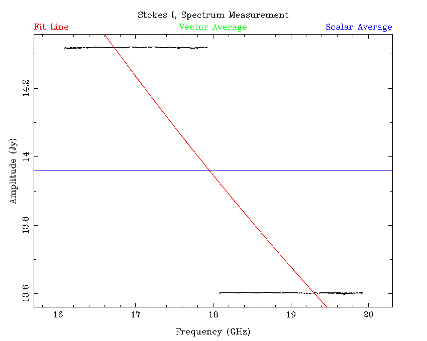
uvfmeas vis=1921-293.1[79]000 stokes=i order=1 options=plotvec,log device=/xs
The bandpass calibration seems to have worked pretty well, since
the flux density in each band is constant over frequency, with
only small deviations. But the source is unlikely to be
actually flat-spectrum, as evidenced by the observation that the
flux density in each band is significantly different.
We thus have to determine the bandpass calibrator's spectral
behaviour and flux density. To do this we copy the the solution
we have just made to the flux calibrator to determine how
wrong it is. But the way this is done is different depending on
whether the flux calibrator is 1934-638 or Uranus. We deal with
the case of 1934-638 first.
The first step here is to do a further calibration with gpcal:
gpcal vis=1921-293.17000 interval=0.1 options=xyvary nfbin=2
gpcal vis=1921-293.19000 interval=0.1 options=xyvary nfbin=2
And then copy these solutions to 1934-638:
gpcopy vis=1921-293.17000 out=1934-638.17000
gpcopy vis=1921-293.19000 out=1934-638.19000
And then calibrate 1934-638 with gpcal:
gpcal vis=1934-638.17000 interval=0.1 options=xyvary nfbin=2
gpcal vis=1934-638.19000 interval=0.1 options=xyvary nfbin=2
It is at this point that automatic flagging may be done on both
the bandpass and flux calibrators, but in most cases very little
flagging is required, and this step can usually be omitted.
Because we have solved for time-varying gains in two bins
across the band, gpcal can deal with both absolute scaling
of flux density, and with a slope correction due to the
error built into the bandpass solution:
gpboot vis=1921-293.17000 cal=1934-638.17000
gpboot vis=1921-293.19000 cal=1934-638.19000
At this point we use uvfmeas to examine the spectrum of the
bandpass calibrator in the same way as before.
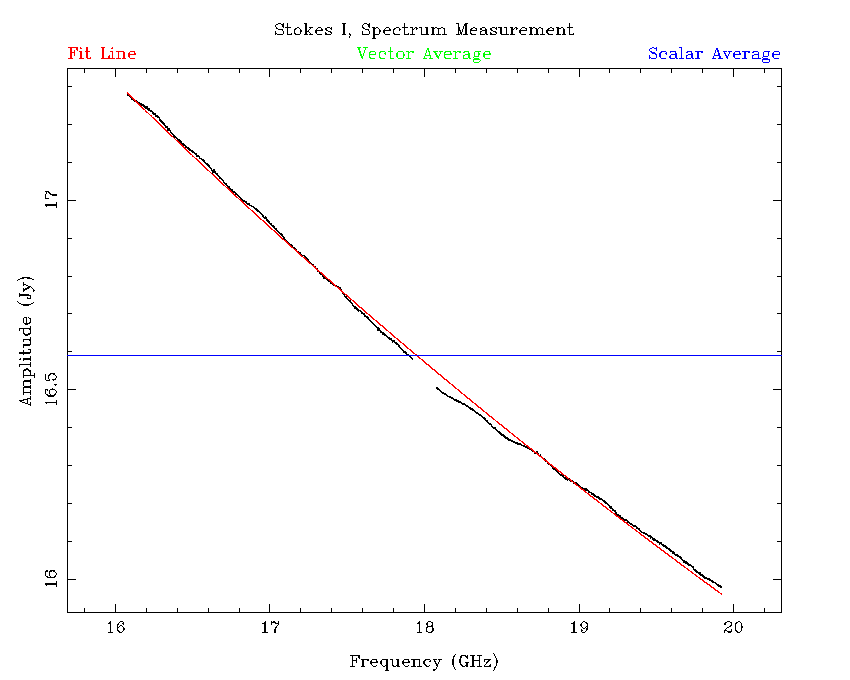
Already this looks like a very large improvement, as the bands
almost join smoothly to each other; recall that the reduction
of the bands have been completely independent. However the
agreement between the bands is not perfect, and the bandpass
function itself is still incorrect.
On the plot above that uvfmeas generated, there is a red line;
this is the least-squares linear fit to $\log {\rm S} / \log\nu$.
On this occasion, the line of best fit is
$\log({\rm S} / 1 {\rm\,Jy}) = 1.685 - 0.3711\log(\nu / 1 {\rm\,GHz}),$
and there is an RMS scatter of 13.85 mJy of the measured flux densities
around this fit line. This would suggest that this fit is accurate to
1%, although there could still be uncertainty in the absolute flux
scaling. Investigations of absolute calibration accuracy was done with
simulations, and in that case it was possible to get better than 1%
accuracy on the bandpass calibrator's flux density using this method,
even if the fit made to each band separately could be in error by as
much as 10%.
To correct the bandpass function we go back to mfcal and input the
now known flux density model for the bandpass calibrator:
mfcal vis=1921-293.17000 interval=0.1 flux=16.9286,17.0,-0.3711
mfcal vis=1921-293.19000 interval=0.1 flux=16.9286,17.0,-0.3711
Here, the flux specification is taken directly from the output of
uvfmeas with the mfflux option given.
We can now redo the flux calibration with 1934-638 as before.
After this, the best fit changes to:
$\log({\rm S} / 1 {\rm\,Jy}) = 1.685 - 0.3713\log(\nu / 1 {\rm\,GHz}),$
and the RMS scatter is decreased to 13.33 mJy. This of course is
not a large improvement, but simulations indicate that doing this
significantly improves the accuracy of flux density measurements for
the other sources that the bandpass calibration is applied to.
If the flux calibrator is Uranus, then the procedure is slightly
different. We start the procedure in a similar way, by doing the mfcal
and gpcal steps on the bandpass calibrator:
mfcal vis=1921-293.33000 interval=0.1
mfcal vis=1921-293.35000 interval=0.1
gpcal vis=1921-293.33000 interval=0.1 options=xyvary
gpcal vis=1921-293.35000 interval=0.1 options=xyvary
Then we copy the gain and bandpass solutions to the flux calibrator:
gpcopy vis=1921-293.33000 out=uranus.33000
gpcopy vis=1921-293.35000 out=uranus.35000
And use mfboot to correct the bandpass and flux scale:
mfboot vis=1921-293.33000,uranus.33000 device=/xs "select=source(uranus)"
mfboot vis=1921-293.35000,uranus.35000 device=/xs "select=source(uranus)"
From this point, we measure the best fit flux density model with
uvfmeas as before, and redo the entire calibration routine again while
specifying the measured fit in the mfcal stage.
At this point we consider that the bandpass and flux calibrators have
the correct bandpass solution, and are on the correct absolute flux
scale. We can now proceed to calibrate the rest of the sources.
Source calibration
The other sources observed during an epoch can easily be calibrated
simply by copying the solutions from the bandpass calibrator, running
gpcal, doing some automatic flagging and repeating the process. This,
for the most part, is independent of the band that we are calibrating.
To keep them on the same flux scale, we run gpboot with the bandpass
calibrator as the reference after the gpcal stage. As an example, for
a source in the 4cm band, the calibration method might look like the
following:
gpcopy vis=1934-638.5500 out=0420-014.5500
gpcopy vis=1934-638.9000 out=0420-014.9000
gpcal vis=0420-014.5500 interval=0.l options=xyvary,qusolve,nopol nfbin=2
gpcal vis=0420-014.9000 interval=0.l options=xyvary,qusolve,nopol nfbin=2
pgflag vis=0420-014.5500 stokes=xx,yy "command=<b"
pgflag vis=0420-014.5500 stokes=yy,xx "command=<b"
gpcopy vis=1934-638.5500 out=0420-014.5500
gpcopy vis=1934-638.9000 out=0420-014.9000
gpcal vis=0420-014.5500 interval=0.l options=xyvary,qusolve,nopol nfbin=2
gpcal vis=0420-014.9000 interval=0.l options=xyvary,qusolve,nopol nfbin=2
gpboot vis=0420-014.5500 cal=1934-638.5500
gpboot vis=0420-014.9000 cal=1934-638.9000
We keep using nfbin=2 so that gpboot can also correct for any slightly
frequency-dependent effects that may be present in the data.
This calibration method is quite robust, and rarely needs manual
intervention, due to the way we do the measurement of flux densities.
But there is a weakness that will need to be solved at some future
point: polarisation calibration is not guaranteed to be very good here.
The problem is that during C007 observations, a source might be observed
only for a few minutes in one hit, and this includes both the bandpass
and flux calibrators as well. Since this is not sufficient parallactic
angle coverage from which to reliably determine leakages, the polarisation
is not well determined. At low frequencies, where 1934-638 is known to
have very small linear polarisations, leakages determined from it are
generally not too bad, and polarisation calibration of the other sources
is also reasonable so long as we specify options=qusolve,nopol during the
gpcal stage (this means that we accept the leakages determined from
1934-638). At higher frequencies, there is no real expectation that
polarisations will be calibrated correctly.
The calibrator database does not currently measure polarisations for
each source because of this known weakness, but work is underway to
determine some polarisation calibrators at all frequencies so this can
be resolved in the future.
Measuring the flux density models
After the calibration process has been completed, we use uvfmeas to
determine best fit flux density models. For example, in the 4cm band,
here is the procedure for measuring the flux density model for the source
2244-372 in the 2012-Apr-22 C007 epoch:
uvfmeas vis=2244-372.5500,2244-372.9000 options=plotvec,log order=1 \
device=/xs stokes=i
The output from this command is:
Source: 2244-372
Stokes I
Vector Average Amplitude: 9.237E-01 Phase: -1.426E-06
Uncertainty: 7.311E-01
Scalar Average Amplitude: 9.379E-01 Uncertainty: 7.211E-01
Vector Average Fit Coefficients:
log S = 1.705E-01
+ -2.432E-01 x (log f)^ 1
Scatter around fit: 1.384E-02
It can be seen that the RFI that is still present after flagging
in the higher-frequency band is largely ignored by the model
fitting process. However, it might be argued that the slope of
the model is not following the curve seen in the spectrum
properly, and a higher-order fit is required. Using uvfmeas with
order=2 results in the output:
Source: 2244-372
Stokes I
Vector Average Amplitude: 9.237E-01 Phase: -1.426E-06
Uncertainty: 7.311E-01
Scalar Average Amplitude: 9.379E-01 Uncertainty: 7.211E-01
Vector Average Fit Coefficients:
log S = 9.104E-02
+ -4.980E-02 x (log f)^ 1
+ -1.155E-01 x (log f)^ 2
Scatter around fit: 1.346E-02
The higher-order fit has a slightly smaller scatter around it
(13.46 mJy) than does the lower-order fit (13.84 mJy). In the
16cm and 4cm bands, we make both order=1 and order=2 fits and choose
the model that has the lowest scatter to go into the database. So, in
this case, the best fit is:
$\log({\rm S} / 1 {\rm\,Jy}) = 0.09104 - 0.0498\log(\nu / 1 {\rm\,GHz}) - 0.1155\log(\nu / 1{\rm\,GHz})^2.$
The "Scatter around fit" value is entered into the database and
gets used to estimate the uncertainty of any flux density derived
from the model at a particular frequency. With regards to absolute
flux density accuracy, simulations of randomly generated calibrators
with various spectral indices shows that this measurement method
reliably obtains better than 3% accuracy across the entire band
regardless of which pair of frequencies is chosen, and so long as
the calibrator has a signal-to-noise ratio of 50 or greater, which
is not difficult to do over 4 GHz of bandwidth in a couple of minutes.
The "Vector Average Amplitude" and "Scalar Average Amplitude" are
both entered into the database, and these values allow us to
estimate the defect.
The uvfmeas task can also be used to determine the amplitude
as a function of $uv$-distance, something that can be useful
in determining if a source has structure, or if there is a
confusing source in the field. However, if the source has a
significant spectral index, then the flux density across the
continuum band will change, and since different frequencies will
lie at different $uv$-distances, this normal flux variation may
be mistaken for structure or confusion.
A better idea is to plot the residual amplitude as a function of
$uv$-distance. The residual amplitude is simply the flux density
at a particular frequency minus the flux density model. For a
non-confused point source with a good model, the residual
amplitude should be zero (plus or minus the noise level) at all
$uv$-distances. Using uvfmeas with the option uvhist makes the
following plot:
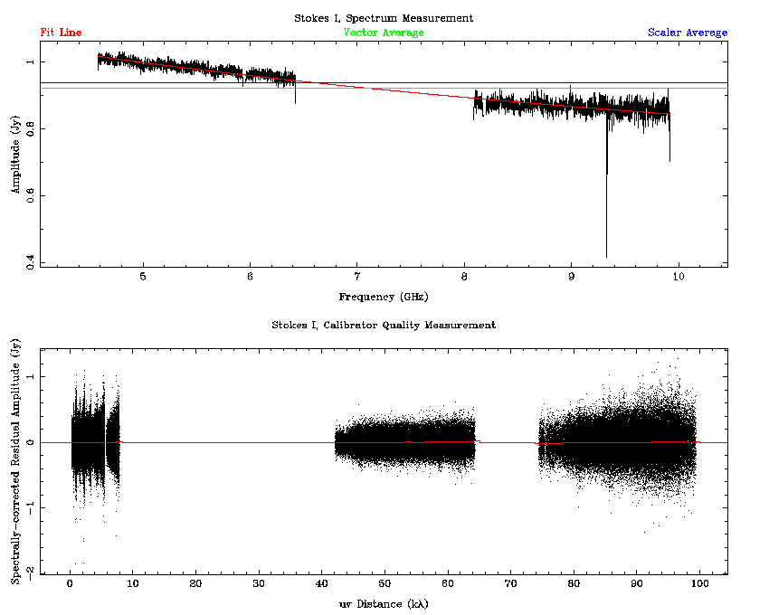
The bottom panel of the plot shows a point for each of the
individual frequency channels at each time during the observation
of the calibrator, after having the model flux density subtracted.
Clearly, putting all those points into the database is not a viable
option. Instead, uvfmeas determines the smallest and largest
observed $uv$-distances, and makes 100 $uv$-distance bins to fit
in this range. An average residual amplitude is calculated in each
of these bins, and it is this histogram that is stored in the
database. The red line on the bottom panel is the visual representation
of this histogram, and for this calibrator you can see that it is
very close to zero-valued at all $uv$-distances.
Measuring closure phase
The closure phase is measured for each calibrator using the Miriad
task closure. Unlike for the flux density models, the closure phase
is measured for each IF separately. For example, for an observation
made in the 4cm band, we would run closure twice:
closure vis=1921-293.5500 stokes=i options=log device=/xs
closure vis=1921-293.9000 stokes=i options=log device=/xs
From the printed output of this task we take two values and keep them
in the database, the measured and theoretical RMS for the closure phase,
but this is unfortunately not an indicator of the closure phase
itself. To get that, we need to actually read the log file that
closure generates, that looks like:
Antennas 1-2-3
32075.69531250 0.00747906
32084.92773438 0.03184347
32094.92773438 0.00064499
32104.92773438 0.00748781
32114.92773438 0.02183627
32124.92773438 0.05054176
Antennas 1-2-4
32075.69531250 0.01375755
32084.92773438 -0.00359855
32094.92773438 -0.00518243
32104.92773438 -0.00782766
32114.92773438 -0.00175100
32124.92773438 0.01889207
....
For each three-antenna set, the log has a time value in the
first column (specified as the number of seconds after the start
of the observation epoch) and the closure phase value in degrees in
the second column. To obtain a single value for the closure phase
we simply take each closure phase value on all baselines and take
the average. This average closure phase is stored in the database.
Measuring miscellaneous parameters
There are several miscellaneous bits of information that the
database stores that are useful to have, but can be a little tricky
to obtain.
The source name, right ascension and declination of the observation,
the time of the first and last cycles on source, the actual
amount of integration time and the exact frequency configuration
are all gathered from the uvindex task.
This task is very easy to run:
uvindex vis=1921-293.5500
It produces output similar to the following:
Summary listing for data-set 1921-293.5500/
Time Source Antennas Spectral Wideband Freq Record
Name Calcode Channels Channels Config No.
12APR22:21:56:35.7 1921-293 n 6 2049 0 1 1
12APR22:21:57:24.9 Total number of records 360
------------------------------------------------
Total observing time is 0.02 hours
The input data-set contains the following frequency configurations:
Frequency Configuration 1
Channels Freq(chan=1) Increment Restfreq IFChain
2049 4.47600 0.0010000 0.00000 GHz 1
------------------------------------------------
The input data-set contains the following polarizations:
There were 90 records of polarization YX
There were 90 records of polarization XY
There were 90 records of polarization YY
There were 90 records of polarization XX
------------------------------------------------
The input data-set contains the following pointings:
Source CalCode RA DEC dra(arcsec) ddec(arcsec)
1921-293 n 19:24:51.06 -29:14:30.12 0.00 0.00
------------------------------------------------
The script that adds data to the database interprets the
first and last times listed in the top section, and stores them
in the database as
MJDs. The total amount of integration time (accounting for
flagging) is calculated by uvindex and is output as the "Total
observing time" in hours.
The frequency configuration of the set is given as the number of
channels, the frequency of the first channel and the frequency spacing
between channels. From this we can tell which correlator mode was
being used, and the sideband. Although this information is not
readily available from the calibrator database web interface, it is
stored and may be made available should it be required.
The source name, and the position it was observed at are shown in
the bottom section of the uvindex output. The R.A. and Dec of each
observation is stored separately to the nominal position of the
calibrator, so we can tell if there is a discrepancy between the
observed and "proper" coordinates.
To determine the array that was used for the observations we use
the uvlist task:
uvlist vis=1921-293.5500 options=array,full
The output of this task looks like:
UV Listing for data-set 1921-293.5500/
Options: full,array
------------------------------------------------------------
Telescope: ATCA
Latitude: -30:18:46.38
Longitude: +149:33:00.50
Mounts: Alt-az
Antenna positions in local equatorial coordinates
X (meters) Y (meters) Z (meters)
---------- ---------- ----------
1 0.0000 0.0000 0.0000
2 -0.0209 -30.6222 0.0090
3 -0.1162 -107.1460 0.0020
4 -0.1710 -153.0710 -0.0010
5 -0.3952 -352.0463 0.0140
6 -5.1442 -4438.7747 0.0600
Antenna 1 is always listed at the origin in this output, but it
is actually antenna 6 that never moves, so we begin by adding
the required length to each position to make antenna 6 appear
at (0, 0, 0). The X direction represents North-South (positive
is North), and the Y direction represents
East-West (positive is East). Since CA06 is always on station
W392, and stations are numbered based on the station interval
being 15.3m, it is straightforward to take these numbers and
calculate which stations each antenna is on. In this case,
CA01 is on W102, CA02 is on W104, CA03 is on W109,
CA04 is on W112, CA05 is on W125 and CA06 is, as always, on W392.
A
table of configurations is available, and with it we can match the
array that was used. These stations correspond to the EW352
array.
Using the web interface
Front Page: Recent Database Changes
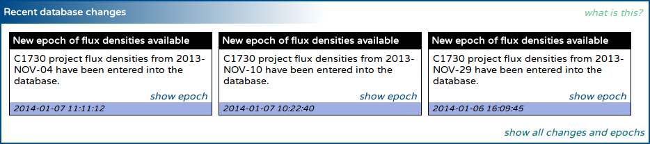
Each time the database is changed, a record is kept that summarises the
change. Most of the time, this change will be a new epoch of measurements
by the C007 or C1730 projects becoming available, but changes to
calibrator position or recomputation of flux densities will also be
tracked.
This section of the front page will always show the three most recent
changes to the database. To get a full list of changes, and a list of all
the measurement epochs in the database, click the "show all changes and
epochs" link at the bottom right of the section.
For new measurement epochs, a "show epoch" link will be shown in the
summary box; clicking this link will take you to a page that summarises
the sources, bands and flux densities observed during that epoch.
Front Page: Quick-find Calibrator
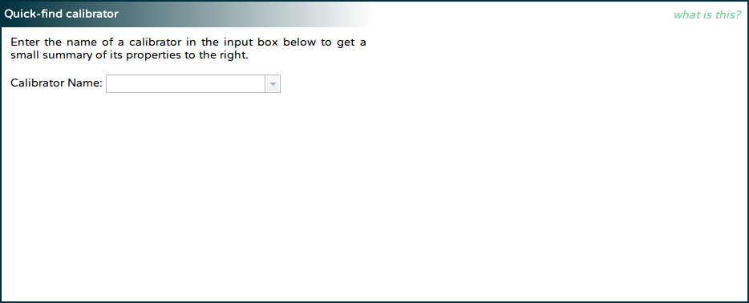
If you know the name of the calibrator you are interested in, and
just want to get a quick summary of the latest flux density measurements
in each band for that calibrator, you can very quickly get this
information.
On the left of this section, you will see an input box asking for a
calibrator name. As you enter the name of the calibrator, the input box
will display the sources known to the database that match the entry
you have made so far. You can select the source from the dropdown box or
continue to type in the name yourself.
Once you have selected or typed the name of a calibrator in the left
box, and pressed Enter or otherwise removed the focus from the input box,
the interface will query the database. Once the results have come back
from the server (which should occur in just a few seconds), the right
side of the section should display the position of the calibrator, the
rise and set LST at the ATCA, and the flux densities at some of the
ATCA recommended continuum frequencies. If no observation of the source
can be found in a particular band, the flux density for that band's
recommended frequency will read "N/A" (not available).
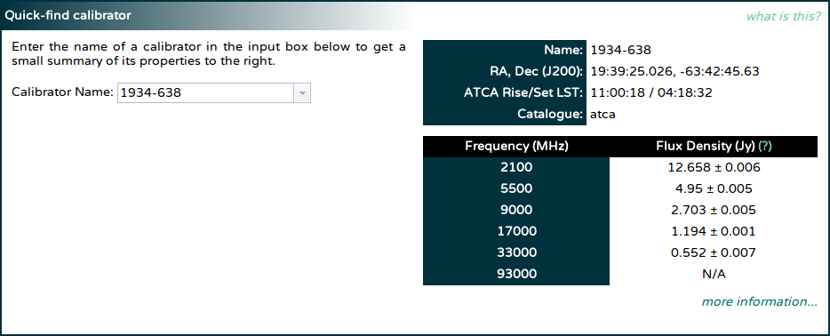
The "more information..." link at the bottom of the table of flux
densities can be used to bring up a page that more contains much
more information about the source.
Front Page: Search for Calibrators
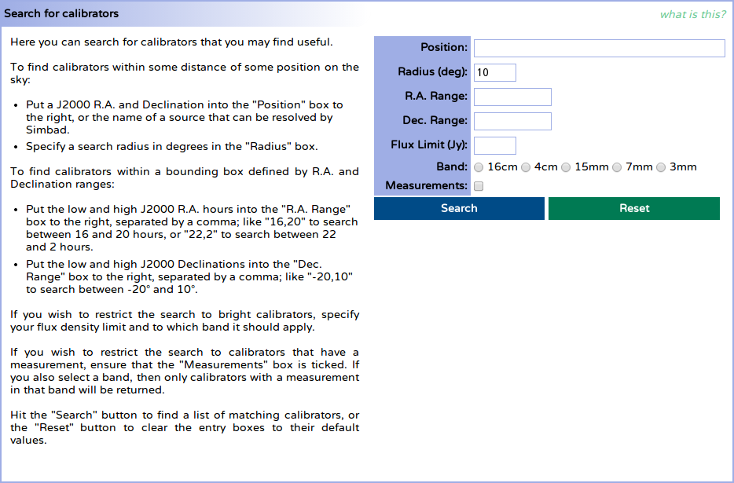
The instructions on the left of this section give a reasonable guide on
how to search for a useful calibrator. This help section will thus be very brief,
and will give only some more detail on the use of the "Position" box.
While entering a right ascension and declination
(e.g. "19:39:25.026 -63:42:45.63") is a perfectly good way to use the
"Position" box, most people are likely to be actually searching for
calibrators around a known source rather than some arbitrary position.
To make such a search easier, the "Position" box will detect if an
entry looks unlike an R.A. / Dec. pair and then assume it is the name
of an astronomical source which can be located with the help of the
Sesame name resolver.
If you enter a source name then (e.g. "NGC 612"), and press Enter or
otherwise take focus away from the "Position" box, you will get an
animated box to let you know that the name is being resolved. Once the
resolution has completed successfully, the box will be filled with the
appropriate R.A. / Dec. (in this case "01:33:58 -36:29:36") and the
animated box will turn solid green, and will show the name of the source
that was just resolved. If the name resolution failed, the box will turn
red, and will indicate the failure.
The "Search" button can now be used to search for calibrators around the
position.
Change Page: Database Change Summary
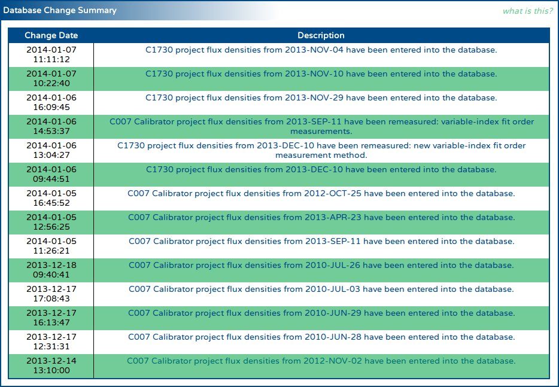
The change summary gives a full list of all the changes made to the
database since its creation. Each change is given a small description,
which is shown in this table. The time that each change was made is shown
on the left of the table, and this time is in the local time zone (Sydney)
will reflect daylight savings time if appropriate.
If the change relates to flux density measurements, then clicking on the
description text will bring up a page that will show all the sources
observed during the related epoch, and the flux densities measured in
each band during that epoch.
If the change relates to a change in the details of a particular calibrator,
then clicking on the description text will bring up a page that describes
that calibrator, and the measurements in the database for that calibrator.
Change Page: Epochs
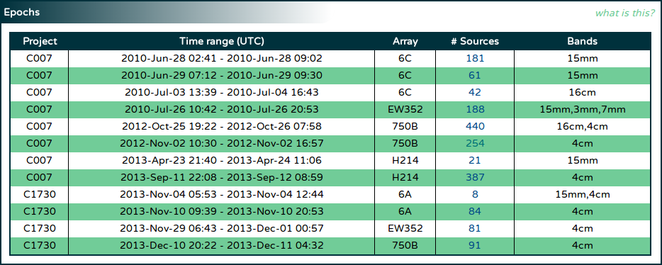
Since the majority of measurements in the ATCA calibrator database are
obtained from the C007 and C1730 projects, this section is here to allow
the user to easily see the epochs of these projects that have contributed
data to the database.
The table itself will appear almost immediately after the page is loaded,
and will be populated with a row for each of the epochs the database
uses, with earlier epochs listed first. For each epoch, the project code
it used, along with the full time range of observations and the array
configuration at the time are given.
After the page has loaded, the table will begin to query the database
for a more complete summary of each epoch (since this will take some
time to compile). Sometime later, each row will also list the number
of unique sources that were observed during that epoch, and the
frequency bands that measurements were made in. Clicking the number in
the "# Sources" column will bring up a page that will show all the sources
observed during that epoch, and the flux densities measured in each band
for those sources.
Epoch Page: Epoch Summary and Epoch Observations
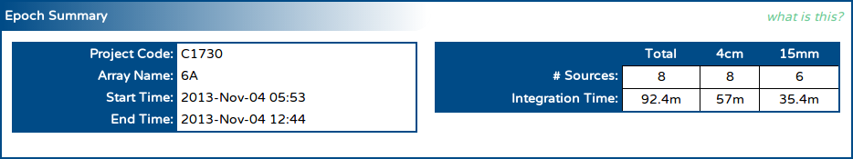
The epoch summary gives a very similar set of information to that
found on the "Epochs" section on the change page: the project code,
the array used during the observations and the epoch time range are
all shown as soon as the page as loaded.
The page also queries the database for each source that was observed
during the epoch, and then determines:
- the bands that were observed in,
- the number of unique sources that were observed in each band, and during the epoch as a whole (shown in the "# Sources" row in the table in the "Epoch Summary" section), and
- the amount of integration time obtained over all the sources in each band (shown in the "Integration Time" row in the table in the "Epoch Summary" section).
After the sources that were observed in the epoch are found in the
database, the table in the "Epoch Observations" section is shown.
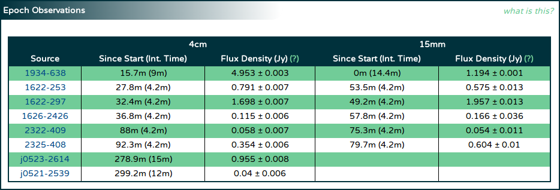
Lower frequency observations are shown to the left in this table.
For each unique source that was observed, two columns are shown per band:
- In the column labelled "Since Start (Int. Time)" are shown two values, the first being the time since the start of the epoch that the source was observed at in that band (in minutes), and the second (in parentheses) being the amount of integration time obtained for that source in that band (again, in minutes).
- The flux density measured from this data, and its associated uncertainty in Jy, evaluated at the lowest recommended frequency in that band.
The sources are ordered in the table such that the sources observed first are listed
first. Each source name is a link to a page that thoroughly describes
the information that the calibrator database has about that source.
Search Page: Search Results
If you used the search section
on the front page to find calibrators within some distance of some
specified coordinate, the "Search Results" section might look something like
the image below.
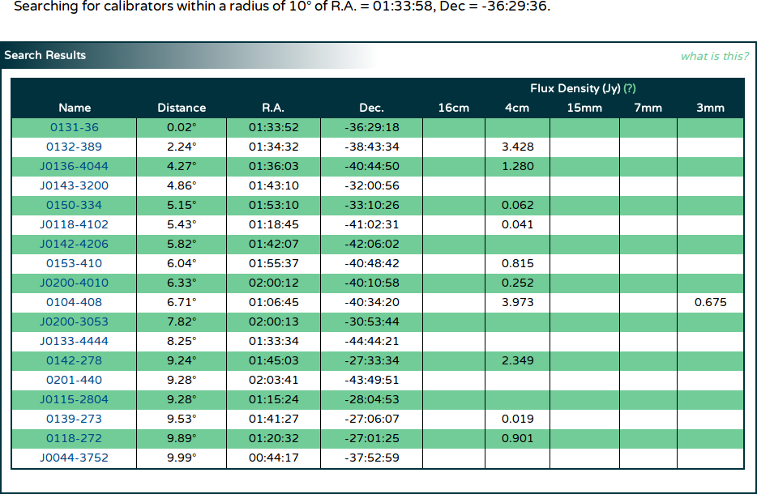
In the area above the "Search Results" section is a human-readable summary
of how the interface interpreted the search parameters. After some time
querying the database (during which time the message
"Searching the database, please wait..." will be shown in place of the
table shown in the image above), the table will appear with the search
results.
The calibrators found that match the search query will be ordered by the distance
to the specified coordinates, with closer calibrators listed first. The distance
between the specified coordinates and each calibrator is given in the column
labelled "Distance" in degrees. The R.A. and Dec. of each calibrator is given in
the appropriately named columns, and each coordinate is rounded to the
nearest arcsec for brevity. To look at more detailed information about a
particular calibrator, click its name in the left-most column.
For each calibrator, the latest flux density in each band is found in the database,
and listed in the appropriate column on the right of the table.
If no flux density measurement has been made in a particular band, that column
will remain empty.
If you searched for calibrators within a block of R.A. and Dec., the
"Search Results" section might look like the image below.
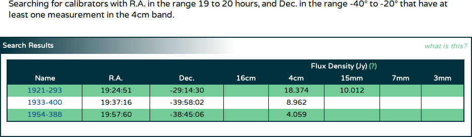
In this case, the "Distance" column is not shown, but in all other regards the
tables are the same.
View Page: Source Information
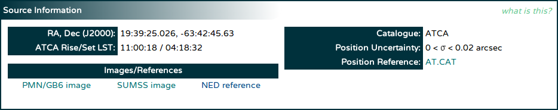
When viewing detailed information about a particular calibrator, the topmost
section will be filled with basic information about the source, as shown
above. The R.A. and Dec. of the source is shown, with the full accuracy
available in the database, along with which catalogue it was taken from,
the positional uncertainty, and in some cases, a link to the catalogue.
After the information is retrieved from the database, the web page itself
calculates the LST when this source rises above the 12° elevation limit
at ATCA, and the LST when it sets below the limit. These LSTs are shown in
the "ATCA Rise/Set LST" row on the left.
For sources that have declinations -88° < δ ≤ -39°,
-27° < δ ≤ -9° or 0° < δ ≤ 77°,
a link will be made to NASA's SkyView
service in order to quickly see an image of this source from the PMN/GB6
survey. This link will be in the "Images/References" table on the left;
For sources that have declinations south of -30°, a link will be
made to SkyView in order to quickly see an image of this source from the
SUMSS. For sources that have declinations north of -39°, a link
will be made to SkyView in order to quickly see an image of this source
from the NVSS.
A link will also always be made to the
NASA/IPAC Extragalactic Database (NED) that will do a "near position"
search around the calibrator's coordinates.
View Page: Notes
The database may have important notes about a calibrator, that may
describe, for example, situations in which the calibrator might not
be suitable. When the database has such notes, they will be shown in this
section.
If the database does not have any notes for the calibrator being viewed,
the text "There are no notes in the database for this source" will be
shown in this section instead.
In some cases (usually when viewing a source from a C1730 epoch), you will
be able to view the measurements made for a source that is not actually
in the ATCA calibrator list. In this case, you will see the message
"This source is not in the calibrator database". Any information shown
about this source in the "Source
Information" section will come from an actual observation at a
specified epoch.
The warning for 16cm observers, seen at the bottom of the image above, will
always be shown in this section.
If you are viewing information about a calibrator you know very well, and think
that you have information about it that other observers should know,
please feel free to send an email to
the calibrators list with the information; we'd be happy to add it as
a note into the calibrator database.
View Page: Flux Density Measurements
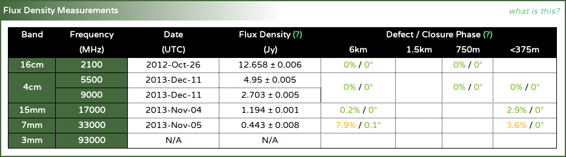
This table summarises the latest measurements made for this calibrator.
For each of the ATCA frequency bands, the page will get the latest
flux density model from the
database, and evaluate it at one or more of the recommended frequencies
in that band. The evaluated flux densities are shown in the appropriate
row of the table, along with the UTC date that the model was measured at.
If no model can be found for a particular band for the calibrator being
viewed, the flux density and date will be shown as "N/A" (not available).
The page will also get the latest
defect and closure phase information
for the calibrator being viewed in each band, and in each different array
group. This information is shown in the "Defect / Closure Phase"
columns on the right of the table. No date is given for each of these
values, but one of the values shown will correspond to the same epoch
in which the flux density model was measured.
View Page: Flux Density Time Series
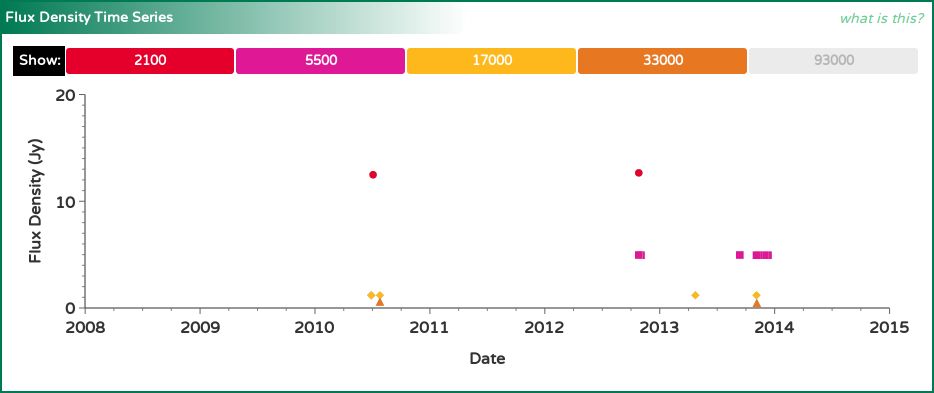
This plot shows how the flux density of the calibrator has changed over
time in each of the ATCA frequency bands. Because the
flux densities in the
calibrator database are actually represented as models fit to the
data during the measurement procedure, the flux densities can
be evaluated at a consistent frequency regardless of the frequencies
actually observed in any epoch (in the same band). This allows us to
do a much more accurate comparison between flux densities measured
in multiple epochs.
In the plot above we see that the flux density of this calibrator
(1934-638 in this case) is different in each of the bands (as expected).
Since the flux density of the calibrator would be different depending on
the frequency, only a single frequency is chosen per band, and these
frequencies are shown at the top of the plot next to the "Show" label,
in MHz.
Since there are many plots on the calibrator view page, a consistent
colour scheme is used across them all.
| Band Name | Colour | Symbol |
|---|---|---|
| 16cm | Vermillion | circle |
| 4cm | Fuchsia | square |
| 15mm | Gold | diamond |
| 7mm | Orange | triangle |
| 3mm | Plum | inverted triangle |
Each of the buttons in the legend next to the "Show" label is coloured
if there is data on the plot in that band. If there is no data available
to plot in a particular band, that band's button will be coloured
grey. Clicking a band's button (if it
is not coloured grey) will remove the
data from that band from each of the plots on the view page, and the
button will then appear slightly transparent (but will still have the
same band colour). To add the data from that band back to the plots,
click the band button again.
When the data shown on this plot changes (as bands are added or removed
from it), the y-axis range will change to keep all the data comfortably
on the plot. The x-axis range is fixed, regardless of the
epochs that are actually available for this calibrator.
View Page: Spectral Index Time Series
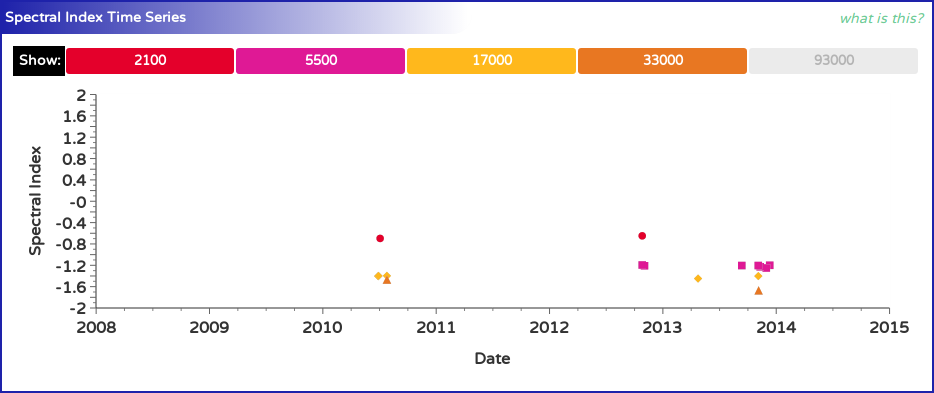
This plot shows how the spectral index of the calibrator has changed
over time in each of the ATCA frequency bands. Because the
spectral indices are
computed from the flux density models in the calibrator database at
a consistent frequency, the spectral index should stay reasonably
constant with time, unless physical changes in the calibrator
cause the emission mechanism to vary, or the flux model is inaccurate.
In the plot above we see that the spectral index of this calibrator
(1934-638 in this case) is different in each of the bands (as expected
since 1934-638 is a GPS source).
Since the spectral index of the calibrator would be different depending on
the frequency, only a single frequency is chosen per band, and these
frequencies are shown at the top of the plot next to the "Show" label,
in MHz.
Since there are many plots on the calibrator view page, a consistent
colour scheme is used across them all.
| Band Name | Colour | Symbol |
|---|---|---|
| 16cm | Vermillion | circle |
| 4cm | Fuchsia | square |
| 15mm | Gold | diamond |
| 7mm | Orange | triangle |
| 3mm | Plum | inverted triangle |
Each of the buttons in the legend next to the "Show" label is coloured
if there is data on the plot in that band. If there is no data available
to plot in a particular band, that band's button will be coloured
grey. Clicking a band's button (if it
is not coloured grey) will remove the
data from that band from each of the plots on the view page, and the
button will then appear slightly transparent (but will still have the
same band colour). To add the data from that band back to the plots,
click the band button again.
When the data shown on this plot changes (as bands are added or removed
from it), niether the x-axis or y-axis range will change, as they are both
fixed.
View Page: Flux Model
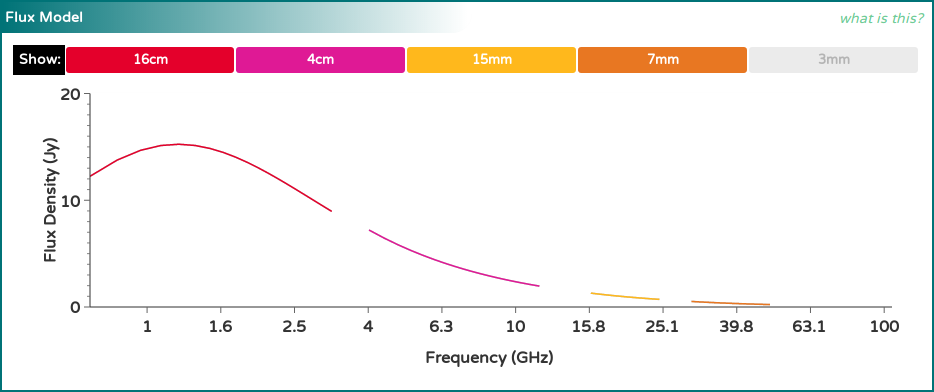
This plot attempts to illustrate the latest flux density models that have
been measured for this calibrator. It does this by evaluating the
flux density models measured
in each band (in the most recent epoch they were obtained) at several
frequencies across the band, and a line is drawn between these points.
In the plot above we see that the flux density models of this calibrator
(1934-638 in this case) are different in each of the bands (as expected),
but they seem to join quite smoothly together. This is what is expected
for a calibrator that has a constant flux density with time. If however the
calibrator is varying, the flux models may appear quite disjoint from one
another, unless the models in each band were made from epochs closely
spaced in time.
Since there are many plots on the calibrator view page, a consistent
colour scheme is used across them all. The following table shows the colours
that represent each band, and also the frequency range that the models
are evaluated over.
| Band Name | Colour | Symbol | Freq. Range (MHz) |
|---|---|---|---|
| 16cm | Vermillion | circle | 700 - 3300 |
| 4cm | Fuchsia | square | 4000 - 12000 |
| 15mm | Gold | diamond | 16000 - 25000 |
| 7mm | Orange | triangle | 30000 - 50000 |
| 3mm | Plum | inverted triangle | 85000 - 105000 |
Each of the buttons in the legend next to the "Show" label is coloured
if there is data on the plot in that band. If there is no data available
to plot in a particular band, that band's button will be coloured
grey. Clicking a band's button (if it
is not coloured grey) will remove the
data from that band from each of the plots on the view page, and the
button will then appear slightly transparent (but will still have the
same band colour). To add the data from that band back to the plots,
click the band button again.
When the data shown on this plot changes (as bands are added or removed
from it), the y-axis range will change to keep all the data comfortably
on the plot. The x-axis range is fixed to contain the entire range of
frequencies shown in the table above, regardless of frequency bands
that are actually available for this calibrator. The x-axis is also shown
logarithmically.
View Page: Structure Plot
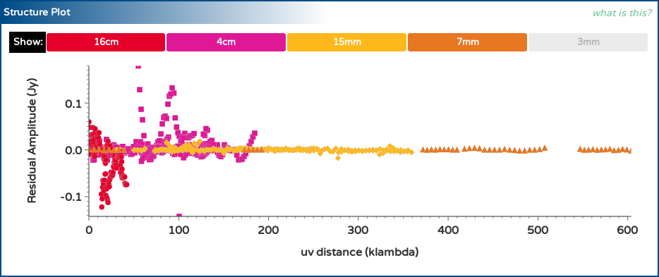
This plot shows the histogram points measured by the uvfmeas task in
each epoch, as described in the
section regarding the
measurement of flux models above. For each band, the five most
recent histograms are obtained from the database and shown here.
For a good calibrator, we expect that the residual amplitude should be
zero at all $uv$-distances. The plot above does not show this to be
the case for 1934-638, which we know is a good calibrator. Looking at
the colours of the points that deviate from zero shows that short baselines
at low frequencies are the biggest outliers. This can be attributed to
low-level RFI in the most part, as the deviations do not exceed 0.2 Jy for
a source that is much stronger than 3 Jy over most of the frequency range
that we see deviations for.
Our general recommendation for interpreting this plot is to look for
significant deviations (usually much larger than 1% of the source
flux density) and to be concerned only if the deviations seem to have
a recognisable pattern to them. In the plot above, the deviations are
semi-random with plenty of discontinuities.
Interpreting the measurements
Flux Densities
Flux densities are shown by the calibrator database either at a particular
frequency (such as on the calibrator-specific page) or in a particular band
(such as on the epoch view pages). The flux densities are obtained by
evaluating the model that was fit to the visibilities during the data
reduction at a specific frequency. On some pages this frequency is
explicitly specified, but when only the band is specified, the
frequencies are set to be the lowest recommended frequency in that band, as
shown in the following table.
| Band Name | Evaluation Frequency (MHz) |
|---|---|
| 16cm | 2100 |
| 4cm | 5500 |
| 15mm | 17000 |
| 7mm | 33000 |
| 3mm | 93000 |
For example, the model measured for 1934-638 during the 2010-JUL-03 epoch
(in the 16cm band) is:
$\log {\rm S}(\nu) = 1.180 + 0.1769\times\log \nu - 1.355\times(\log \nu)^2,$
where $\rm{S}$ is the flux density in Jy, and $\nu$ is the frequency in GHz. Thus,
if the 16cm flux density is specified on one of the calibrator database pages, it
is derived from:
\[\begin{eqnarray}
{\rm S}(2.1) & = & 10^{1.180 + 0.1769\times\log(2.1) - 1.355\times(\log(2.1))^2} \\
& = & 12.483 {\,\rm Jy}
\end{eqnarray} \]
Each flux density is usually accompanied by an uncertainty after a $\pm$ symbol.
For example, the flux density above would usually be given as $12.483\pm0.002$ Jy.
This uncertainty comes from the RMS value of the visibility amplitudes after the
measured fit is subtracted.
On all pages where the flux density is shown as a number, both it and the
associated uncertainty are rounded to the nearest mJy.
In general, observations made by the C007 calibrator project will reach
sensitivities of around a few mJy. If the scatter around the fit is observed to
be more than 10 mJy, the associated flux density should be treated with some
suspicion. If the scatter is more than 100 mJy then the flux density is probably
incorrect, as there will likely have been some problem with the data.
Defects and Closure Phases
The defects and closure phases displayed in the "Flux Density Measurements"
section on the calibrator page give an indication of the suitability of the
source for calibration purposes.
During the flux density measurement process, both the scalar-averaged and
vector-averaged flux density is measured for each band as a whole. We assume
that the vector-averaged flux density represents primarily the flux present
within the resolution element at the phase centre of the observation, which
is set to be the known position of the calibrator. The scalar-averaged
flux density should represent the amplitude response of the primary beam,
which is not restricted to the source at the phase centre, and should always
be equal to or larger than the vector-averaged flux density.
The defect is defined to be:
${\rm defect} = ( [{\rm S}_{sca} / {\rm S}_{vec}] - 1)\times 100\%,$
where ${\rm S}_{sca}$ is the scalar-averaged flux density, and
${\rm S}_{vec}$ is the vector-averaged flux density.
But the defect itself is not a good summary of a calibrator's quality, as
there could be a number of reasons for a non-zero defect (which we'll
describe later). For this reason, we measure another quantity during the reduction
process: the closure phase.
If there is a point-like component in
the field then the average closure phase measured by each set of three antenna
should be zero for that component, regardless of the position of the
component within the field. If the component is not point-like, then
the closure phase will be non-zero.
Of course there may be more than one component in the field, but
brighter components will influence the measured closure phase more than
fainter components.
Taken together, the defect and closure phase gives us an idea of what
the calibrator field may be like, as summarised in the following table.
| Defect | Closure Phase | Interpretation |
|---|---|---|
| small | small | A dominant point source at the phase centre; little to no confusion. |
| moderate | small | Probable confusing source within the field, bright enough to cause issues with calibration. |
| large | small | Either a confusing source with a very similar brightness to the source at the phase centre, or likely to be a point source offset from the phase centre (i.e. a calibrator observed at the wrong position). |
| moderate - high | moderate - high | Significantly resolved structure bright enough to make calibration very difficult. |
To assist with the use of these classifications, the defects and
closure phases are colour-coded where they are displayed. "Small"
defects and closure phases are coloured green,
"moderate" values are coloured orange,
and "high" values are coloured red.
Since a "point-like component" is simply a source of flux density
that is unresolved by the interferometer, it is clear that the
definition is dependent on the interferometer's resolving power. This
is why the defects and closure phases are reported for various array
sizes. These values come only from arrays with maximum baselines
less than or equal to the length given in the header above the column.
For example, values given in the column headed by "1.5km" come only from
1.5 arrays (1.5A, B, C or D). You should use the numbers corresponding
to the array you plan on using in assessing the suitability of a
particular calibrator.
Spectral Indices
Spectral indices are shown by the calibrator database at a particular
frequency, which is usually listed near to the spectral index value
itself. The spectral indices are obtained by evaluating the derivative
of the model that was fit to the visibilities during the data reduction
at this particular frequency.
We define the spectral index of a source by noting that for most
sources the observed flux density is dependent on the observing
frequency via
${\rm S} \propto \nu^{\alpha},$
where ${\rm S}$ is the flux density at some frequency $\nu$, and
$\alpha$ is the spectral index. We define $\alpha$ such that
negative values indicate that the flux density decreases with
increasing frequency.
Measuring a source's spectral index is thus generally achieved by
measuring $\log {\rm S}$ at multiple $\log \nu$ and fitting a line, of
which $\alpha$ is the slope. But this is not always possible. The
calibrator database stores models with up to 3 coefficients in each
of the models:
\[\begin{eqnarray}
\log {\rm S} & = & a + b\times \log \nu + c\times(\log \nu)^2 \\
{\rm S} & = & a + b\times\nu + c\times\nu^2
\end{eqnarray} \]
The logarithmic models are used for the vast majority of the calibrators
in the database, but for those calibrators with flux densities near zero
(and thus with flux densities in a particular channel that may be
negative), the non-logarithmic models are used.
The spectral index is just the rate of change of $\log {\rm S}$ with
$\log \nu$, which is easy to compute for the logarithmic model:
$\alpha \equiv d\log{\rm S}/d\log\nu = b + 2c\times\log\nu.$
It is straightforward to see that if $c = 0$, then $\alpha = b$ as
expected.
For the non-logarithmic model, we first have to do some substitution:
$\log {\rm S} = \log (a + b\times\nu + c\times\nu^2).$
If we call $x \equiv \log\nu$, then $\nu = 10^x$, and the equation
above becomes:
$\log {\rm S} = \log (a + b\times10^x + c\times10^{2x}).$
We can take the derivative of this now (thanks to
Wolfram Alpha):
$\alpha \equiv d\log {\rm S}/dx = 10^x(b + 2^{x+1}\times5^xc)/(a+10^x(b+c10^x)).$
This can be further simplified by reversing the previous substitution
and identifying the denominator as simply the equation for the flux density:
$\alpha = \nu(b + 2\nu c) / {\rm S}$
We note that the non-logarithmic models may be non-physical, as
they allow for negative flux density, but should suffice for how
they are used here, as the noise level on observations where
they are used is large enough to make it the dominant form of
the uncertainty.
VLA Calibrator Information
For those calibrators that are also in the
VLA calibrator list, the calibrator database page will show
the appropriate entry from the
VLA calibrator manual.
The information contained in the calibrator list is very compact, but
conveys a significant amount of information. A key to the intepreting
the information is given
on this page.